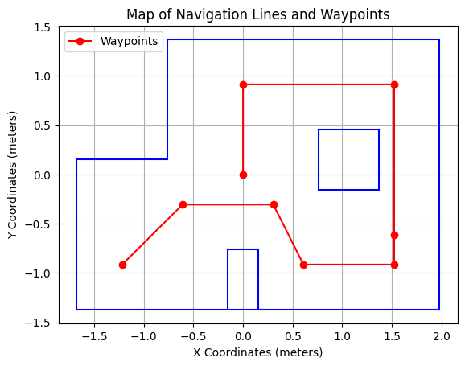
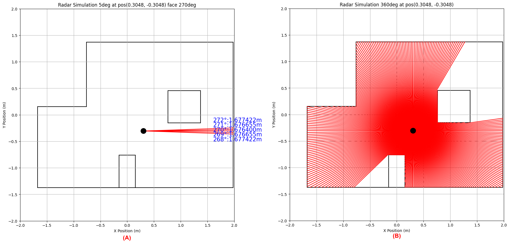

Path Planning
The task is to quickly and accurately pass through a set of waypoints in a known map. As shown, the blue lines are walls and obstacles, starting at (-1.2192, -0.9144) in the lower left corner and ending at (0, 0).

My planning steps are as follows:
1. Set the 0 degree reference direction to the direction the robot will be facing when it starts,
and the counterclockwise direction to the positive direction.
I will place the robot in the map + y direction.
2. For each target waypoint perform the following steps:
- 2.1 Update the current robot position using lab11's localization code.
- 2.2 Calculate the deviation of the vector of the current position and the target point from the 0 degree reference direction,
and use the PID rotate controller to control the robot to rotate to that deviation.
Since I used DMP combined with quaternions to calculate the angle, the angle returned by the robot is plausible.
After testing, the angle error margin was +-1 degree for 20 minutes at rest and +-2 degrees after multiple rotations.
- 2.3 After the robot has rotated to the specified angle, set the setpoint to the distance that the ToF sensor will measure at the target point, facing the current angle.
- 2.4 Send this setpoint to the robot and use the pid_distance_controller to control the robot to move toward wall
- 2.5 Reach the specified distance and go to the next cycle.
Functions Implemented by Computer
Update the Current Robot Position
I used code implemented in lab11 to control the robot to rotate in place. The robot uses the front ToF sensor to measure every 20 degrees and employs a Bayesian filter to update its position.
Angle for Robot Rotation
In lab6, I implemented the functionality to control the robot to rotate to a specified angle using absolute angle control. The robot's target rotation angle is set based on a fixed reference direction (initial direction), rather than relative to its current position. For example, if my initial direction is the +y direction, then entering 90 degrees will cause the robot to rotate to the -x direction. Entering 90 degrees again will still point the robot to the -x direction. It is only when an angle of 180 degrees is entered that the robot will rotate to the -y direction. Therefore, to control the robot to rotate to face the next waypoint, I just need to calculate the deviation between the line connecting the current position to the target point and the initial direction, and then pass this value to the robot. The following is the code implementation:
Distances for Robot Movement
In lab5, I implemented the functionality that allows the robot to move to a set_point given relative to a wall. For example, when the set_point is 30 cm, the PID controller will control the robot to move to a position 30 cm away from the wall. In this lab, I can use this functionality to control the robot to move to waypoints with high precision. I choose to compute the set point on the computer and then send it to the robot. Set point depends on the angle of the robot when it reaches the target waypoint, and the position of the waypoint. I assume that the robot can move in a straight line, therefore, the angle at departure is the angle upon reaching the target point. I generate a vector at the target point facing the current direction, calculate the intersections of this vector with all obstacles, store the closest intersection obtained, and calculate the distance from the intersection to the target point. This is the setpoint. This method is similar to a radar simulation. Code and example are as follows:
Figure 2b: Radar Simulation 360deg at pos(0.3048, -0.3048)
Robustness Discussion
I understand that the robot may not be able to accurately reach the set point. Therefore, after the robot goes
through the steps above and arrives at the setpoint, its position will be updated again. If the distance
is greater than 30 cm (considering the difficulty in precisely adjusting the robot's position and localization errors)
and less than 1 meter (considering that localization may produce outrageously wrong results), the above steps will be
repeated to approach the waypoint more closely. The code is shown below.
This planning will be limited by whether the robot can travel in a
straight line, the accuracy of the robot's localization, and the precision of the ToF measurements.
Functions Implemented by Robot
Rotate and Measure
After receiving a command from the computer to locate itself, the robot will perform rotation and measurement functions, with the code being the same as in lab11.
Rotate to target angle
After receiving a command from the computer to rotate to a specified angle, the robot will perform the rotation function, with the code being the same as in lab11 and lab6.
Move to setpoint
After receiving a command from the computer to move forward to a set_point, the robot will perform the forward movement function, with the code being the same as in lab5.